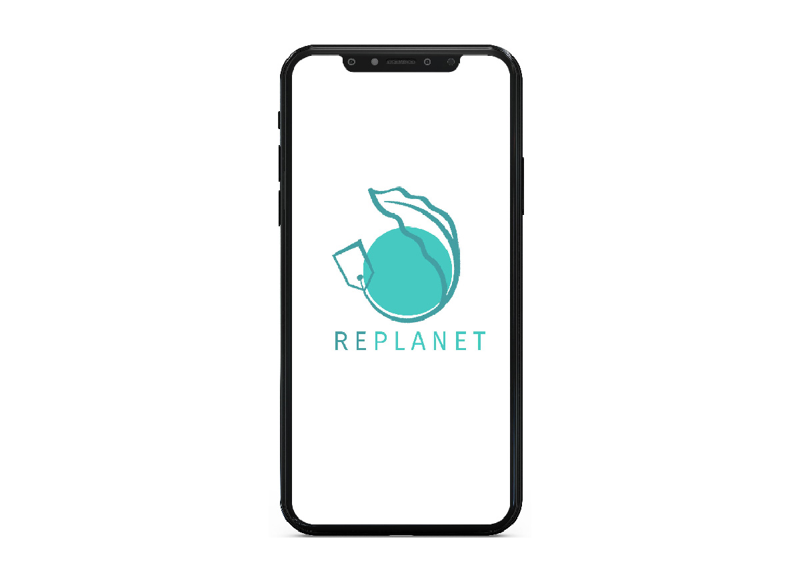

An app that can tell you the environmental impact of the production and distribution of the good's the customer is purchasing; in an attempt to reduce consumption of highly unsustainable products.
How it would work
The user would be able to scan the barcode and recieve relevant information about the water used in production, carbon emissions and production malpractices. The user would also be able to visit their past searches
Context
For an initial design, the product used was a bottle of Coca Cola. All the information was available in the public domain.
Time+Tools
3 days

The logo is a simplified representation of the eventual reconciliation of capitalistic as well as environmental ideas on a global scale. The name Replanet, is also a reference to the redesigning of the planet.
Once an item is scanned the information would be available like this. The screen would have a few animations and one could scroll for more info.
The app automatically opens on the scanning page, such that the user would easily be able to scan any products while shopping.
The user also has the option of visiting their past purchases and seeing past information.